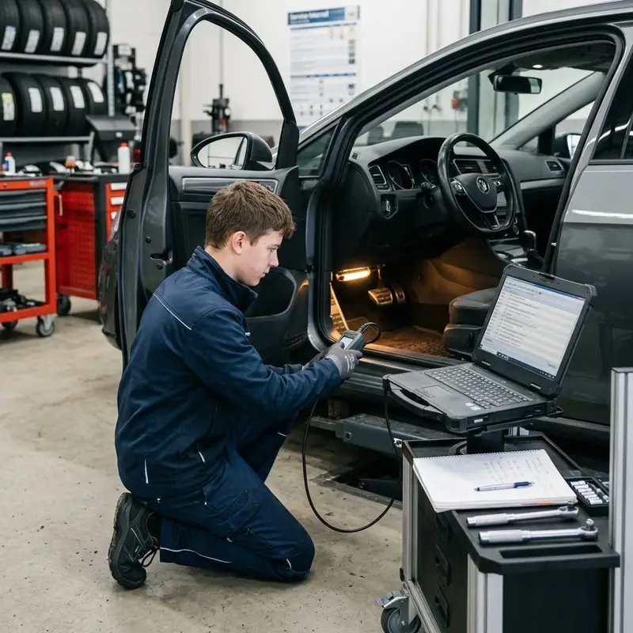

1 ΕΙΣΑΓΩΓΗ
Εισαγωγή στα δίκτυα οχημάτων
Πώς αισθητήρες, ηλεκτρονικές μονάδες ελέγχου και ενεργοποιητές συνεργάζονται ανταλλάσσοντας δεδομένα.

2 ΜΑΘΗΣΙΑΚΟΙ ΣΤΟΧΟΙ
Τι θα μπορείς να κάνεις
Πέντε σαφείς δεξιότητες που θα ελέγξεις στο τέλος του μαθήματος.
![Διαδρομή πέντε μαθησιακών στόχων]()
Εξηγείς την ανάγκη δικτύωσης
Γιατί οι σύγχρονες ECU πρέπει να ανταλλάσσουν δεδομένα.
Διακρίνεις τους τρεις ρόλους
Αισθητήρας, ECU και ενεργοποιητής.
Ακολουθείς τη ροή πληροφορίας
Μέτρηση → επεξεργασία → μήνυμα → ενέργεια.
Αναγνωρίζεις βασικά πρωτόκολλα
SAE J1850, PCI Bus, I²C και CAN Bus.
Εφαρμόζεις αρχική διάγνωση
Ελέγχεις τροφοδοσία, γείωση, συνδέσεις και δίκτυο.
3 ΓΙΑΤΙ ΧΡΕΙΑΖΟΝΤΑΙ ΔΙΚΤΥΑ;
Μία κοινή υποδομή αντί για δεκάδες ξεχωριστές γραμμές
![Τέσσερις ηλεκτρονικές μονάδες σε κοινό δίαυλο δεδομένων]()
ΠΑΛΑΙΟΤΕΡΗ ΛΟΓΙΚΗ
Ξεχωριστή καλωδίωση
- Περισσότερα καλώδια
- Μεγαλύτερο βάρος
- Δυσκολότερη επισκευή
ΔΙΚΤΥΩΜΕΝΗ ΛΟΓΙΚΗ
Κοινός δίαυλος δεδομένων
ECUΚινητήρας
ECUABS
ECUΌργανα
ECUΆνεση
ΚΟΙΝΟΣ ΔΙΑΥΛΟΣ
- Κοινή χρήση δεδομένων
- Λιγότερες ειδικές συνδέσεις
- Ευκολότερη διάγνωση
Λιγότερη καλωδίωσηΚοινή πληροφορίαΔιάγνωσηΕπεκτασιμότητα
4 Η ΒΑΣΙΚΗ ΑΛΥΣΙΔΑ
Μέτρηση, απόφαση, ενέργεια
Κάθε εξάρτημα έχει διαφορετικό ρόλο μέσα στο λειτουργικό σύστημα.
![Αισθητήρας προς ECU προς ενεργοποιητή]()
Μετατρέπει θερμοκρασία, πίεση, θέση ή ταχύτητα σε ηλεκτρική πληροφορία.
Διαβάζει δεδομένα, τα συγκρίνει και στέλνει εντολές ή νέα μηνύματα.
Μετατρέπει την ηλεκτρική εντολή σε κίνηση, ροή, πίεση ή άλλη φυσική δράση.
Μέσοφυσική σύνδεση
+
Μήνυμαοργανωμένα δεδομένα
+
Πρωτόκολλοκανόνες επικοινωνίας
=
Δίκτυοσυντονισμένη ανταλλαγή
5 ΜΗΝΥΜΑΤΑ ΚΑΙ ΠΡΩΤΟΚΟΛΛΑ
Ίδια έννοια, διαφορετική κλίμακα και χρήση
![Κόμβοι ECU συνδεδεμένοι στις γραμμές CAN-H και CAN-L]()
SAE J1850Παλαιότερη δικτύωση και διάγνωσηLEGACY
PCI BusΠαλαιότερες λύσεις κατασκευαστώνΟΧΗΜΑ
I²CΜέσα σε ECU ή ηλεκτρονική πλακέταΕΣΩΤΕΡΙΚΟ
CAN BusΒασικός δίαυλος μεταξύ ECUΚΥΡΙΟ
Σωστή επικοινωνία =σωστή τιμήσωστός χρόνοςσωστός παραλήπτης
6 ΠΑΡΑΔΕΙΓΜΑ ΟΧΗΜΑΤΟΣ
Έλεγχος θερμοκρασίας ψυκτικού
Μία μέτρηση χρησιμοποιείται ταυτόχρονα για ψύξη και ενημέρωση του οδηγού.
![Ροή δεδομένων από τον αισθητήρα ECT προς ECU, ανεμιστήρα και πίνακα οργάνων]()
ΣΥΝΘΗΚΗ104 °CΥπέρβαση ορίου λειτουργίας
1Αισθητήρας ECTΜετρά 104 °C
→
2ECU κινητήραΣυγκρίνει με τα όρια
↗↘
3ΑΑνεμιστήραςΕνεργοποιείται
3ΒΠίνακας οργάνωνΕνημερώνει τον οδηγό
Κεντρική ιδέα
Το ίδιο δεδομένο μπορεί να μεταδοθεί στο δίκτυο και να χρησιμοποιηθεί από περισσότερες από μία ηλεκτρονικές μονάδες.
![Υπολογιστής με δίκτυο ECU και σειρά διαγνωστικών ελέγχων ABS]()
- 115΄Ταξινόμησε εξαρτήματα
Αισθητήρας, ECU ή ενεργοποιητής;
- 215΄Σχεδίασε τη ροή ψύξης
ECT → ECU → δύο έξοδοι.
- 315΄Κατασκεύασε δίκτυο ECU
Κινητήρας, ABS, όργανα και άνεση.
- 410΄Αντιστοίχισε πρωτόκολλα
J1850, PCI, I²C και CAN.
- 510΄Διάγνωσε απώλεια επικοινωνίας
Βάλε τους ελέγχους στη σωστή σειρά.
ΠΕΡΙΣΤΑΤΙΚΟ«Δεν υπάρχει επικοινωνία με τη μονάδα ABS»
Το μήνυμα είναι σύμπτωμα, όχι απόδειξη κατεστραμμένης ECU.
- Τροφοδοσία
- Γείωση
- Φίσα
- Καλωδίωση
- ECU
8 ΥΛΙΚΟ ΚΑΙ ΑΝΑΚΕΦΑΛΑΙΩΣΗ
Όλα όσα χρειάζεσαι πριν από το τεστ
![Παρουσίαση, φύλλο εργασίας και ανακεφαλαίωση μαθήματος]()
PPTX
ΠΑΡΟΥΣΙΑΣΗΘεωρία 30 διαφανειών
Λήψη
Ορισμοί, τεχνικά διαγράμματα και παραδείγματα.
DOC
ΦΥΛΛΟ ΕΡΓΑΣΙΑΣΕργαστηριακές δραστηριότητες
Λήψη
Ροή δεδομένων, δίκτυο ECU και διάγνωση ABS.
Οι ECU συνεργάζονται μέσω δικτύων.
Αισθητήρας → ECU → ενεργοποιητής.
Τα μηνύματα μεταφέρουν κωδικοποιημένα δεδομένα.
Τα πρωτόκολλα ορίζουν τους κανόνες.
Η διάγνωση εξετάζει ολόκληρη τη διαδρομή.
9 ΤΕΛΙΚΗ ΑΥΤΟΑΞΙΟΛΟΓΗΣΗ
Τεστ Μαθήματος 1
- 30ερωτήσεις
- 1επιλογή
- 24/30όριο επιτυχίας
- %τελικό ποσοστό
![Τελικό τεστ 30 ερωτήσεων με όριο επιτυχίας 24 στις 30]()
Πρόοδος τεστ
0/30 απαντημένες
Σωστές απαντήσεις0/30
Ποσοστό επιτυχίας0%
Στάδιο 1 από 9